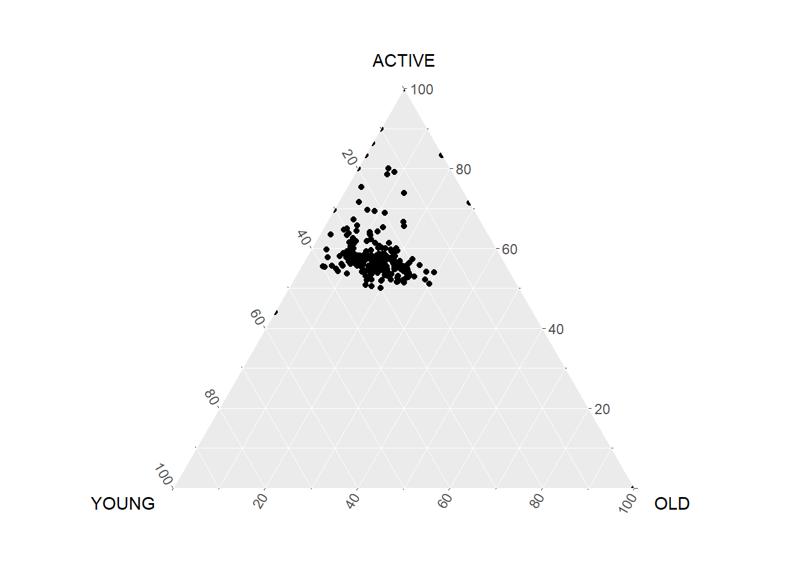

10 Ternary Plot to display composition of 3 variables
Hands-On Exercise for Week 6
(First Published: May 17, 2023)
10.1 Learning Outcome
We will learn how to build ternary plot programmatically using R to visualise and analyse population structure of Singapore.
Ternary plots display the distribution and variability of three-part compositional data. (For example, the proportion of aged, economy active and young population or sand, silt, and clay in soil.) It’s display is a triangle with sides scaled from 0 to 1. Each side represents one of the three components. A point is plotted so that a line drawn perpendicular from the point to each leg of the triangle intersect at the component values of the point.
10.2 Getting Started
10.2.1 Install and load the required r libraries
Install and load the the required R packages. The name and function of the new package that will be used for this exercise is as follow:
- ggtern, a ggplot extension specially designed to plot ternary diagrams. The package will be used to plot static ternary plots.
Due to some technical issue, ggtern is currently not available for downloading via cran. We need to download ggtern from the archive by using the code chunk below. The latest archive version is 3.4.1.
(The codes above to install ggtern should only run once)
10.2.2 Import the data
For the purpose of this hands-on exercise, the Singapore Residents by Planning AreaSubzone, Age Group, Sex and Type of Dwelling, June 2000-2018 data will be used. The data set is called respopagsex2000to2018_tidy.csv and is in csv file format.
Next, use the mutate() function of dplyr package to derive three new measures, namely: young, active, and old.
Show the code
#Deriving the young, economy active and old measures
agpop_mutated <- pop_data %>%
mutate(`Year` = as.character(Year))%>%
pivot_wider(names_from = AG, values_from = Population) %>%
mutate(YOUNG = rowSums(.[4:8]))%>%
mutate(ACTIVE = rowSums(.[9:16])) %>%
mutate(OLD = rowSums(.[17:21])) %>%
mutate(TOTAL = rowSums(.[22:24])) %>%
filter(Year == 2018)%>%
filter(TOTAL > 0)10.3 Plotting Static Ternary Diagram with ggtern
We can use ggtern() function of ggtern package to create a simple ternary plot.
Show the code

Let’s beautify the plot.
10.4 Plotting Interactive Ternary Diagram with plotly
We can create an interactive ternary plot using plot_ly() function of Plotly R.
🖱️Mouse over the dots below to check out the proportion of each population group for the subzones!
Show the code
# reusable function for creating annotation object
label <- function(txt) {
list(
text = txt,
x = 0.1, y = 1,
ax = 0, ay = 10,
xref = "paper", yref = "paper",
align = "center",
font = list(family = "serif", size = 20, color = "white"),
bgcolor = "#b3b3b3", bordercolor = "black", borderwidth = 2
)
}
# reusable function for axis formatting
axis <- function(txt) {
list(
title = txt, tickformat = ".0%", tickfont = list(size = 10)
)
}
ternaryAxes <- list(
aaxis = axis("Young"),
baxis = axis("Active"),
caxis = axis("Old")
)
# Initiating a plotly visualization
plot_ly(
agpop_mutated,
a = ~YOUNG,
b = ~ACTIVE,
c = ~OLD,
color = I("black"),
type = "scatterternary",
text = ~SZ # Added this argument to show the name of the subzone
) %>%
layout(
annotations = label("2018 Population Structure\nbased on Subzones"),
ternary = ternaryAxes
) \(**That's\) \(all\) \(folks!**\)